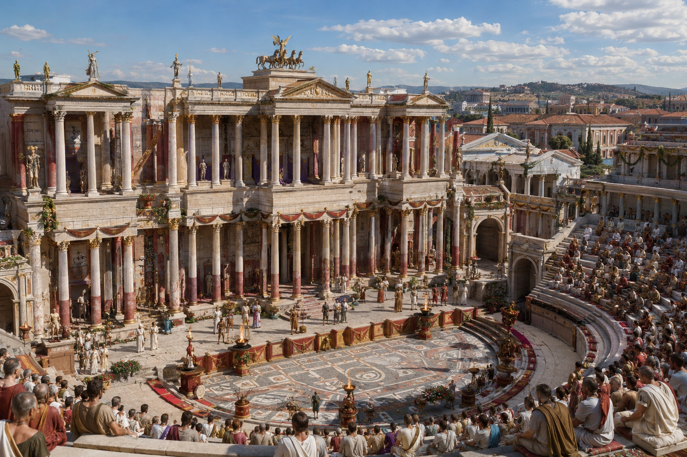

Mérida encarna uno de los conjuntos monumentales romanos más impresionantes de Europa, fundada como colonia para eméritos del ejército, Augusta Emerita se convirtió en la capital de la provincia de Lusitania y en un referente arquitectónico cuya grandiosidad inspira la recreación del mundo clásico.
En el año 25 a.C., el legado imperial Publio Carisio fundó Augusta Emerita por orden del emperador Augusto, su propósito principal era albergar a los soldados veteranos (eméritos) de las legiones V Alaudae y X Gemina tras finalizar las guerras cántabras.
El año 25 a.C., tras las Guerras Cántabras que finalmente sometieron a los pueblos del norte peninsular, Augusto encargó al legado Publio Carisio la fundación de una colonia para asentar a los veteranos «eméritos» (licenciados con honores) de las legiones V Alaudae y X Gemina. La ciudad se levantó en una vega del río Anas (Guadiana), en un cruce estratégico de calzadas que conectaba el suroeste peninsular con la Meseta.
Mérida, la Emerita Augusta de los romanos, es la ciudad española con el conjunto monumental romano más completo y mejor conservado de toda la Península Ibérica y uno de los más espectaculares de toda la Hispania romana. Fundada en el año 25 a.C. por el emperador Augusto.
El Teatro Romano de Mérida es el más conocido de todos los monumentos de la ciudad. Construido por orden del cónsul Marco Vipsanio Agripa (yerno de Augusto) entre 16 y 15 a.C., podía albergar a 6.000 espectadores. Fue restaurado en época de Trajano y nuevamente bajo Constantino I.

Puente Romano sobre el Guadiana
Foro Provincial y Foro Municipal
Arco de Trajano